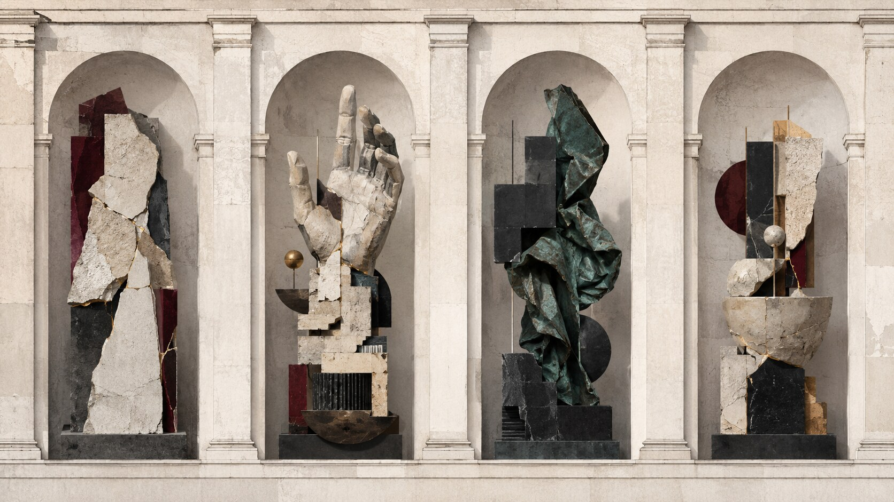

艺术人文 × 当代艺术 × 博物馆立面、委托机制与公共入口
作品尚未揭幕，博物馆立面已经为它预设了观看方式
刘韡是 1972 年生于北京、以雕塑、绘画和装置讨论城市与制度变化的当代艺术家。Met 宣布他将为博物馆第五大道立面的四个壁龛创作新作；这既是一次雕塑委托，也是在 Tang Wing 开幕前公开表述机构未来方向。

发生了什么
Met 于 8 月 12 日公布第七届立面委托。四件场域特定雕塑将于 9 月 17 日揭幕，并展至 2027 年 6 月 8 日；这是刘韡在美国的首个大型项目，也是 2006 年以来 Met 首次委托中国艺术家创作新作。